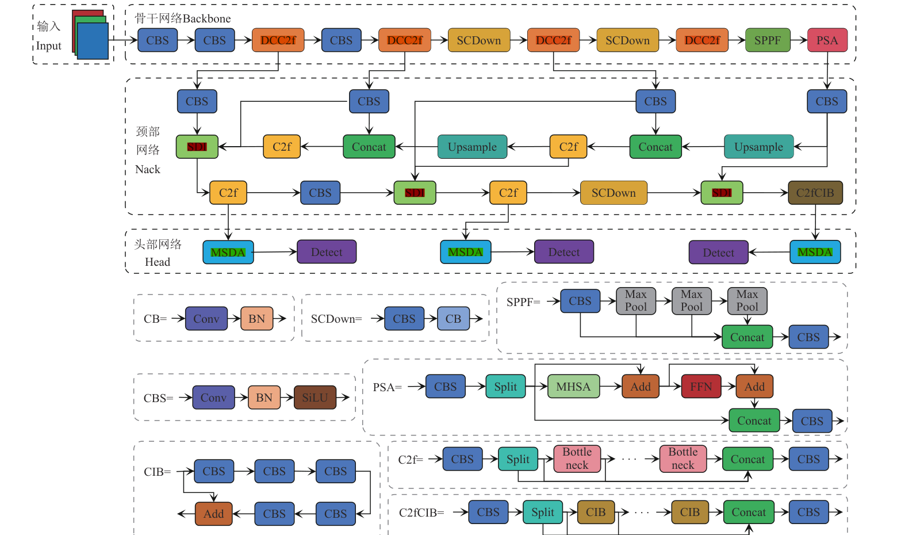
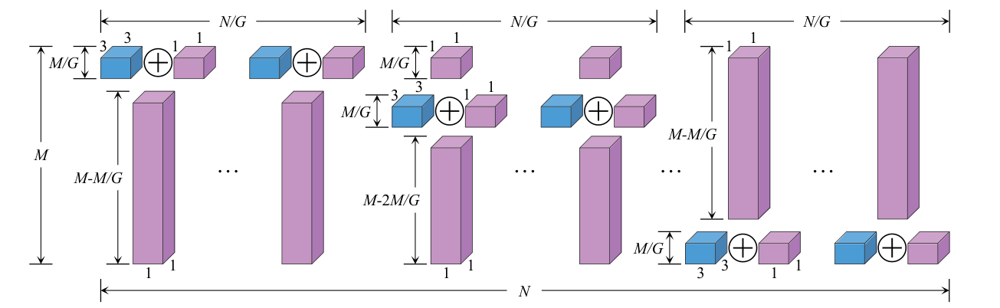
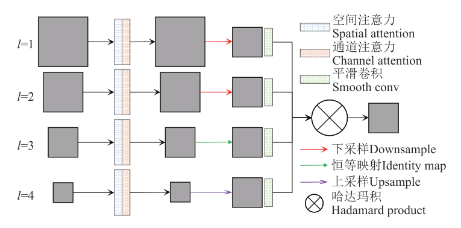
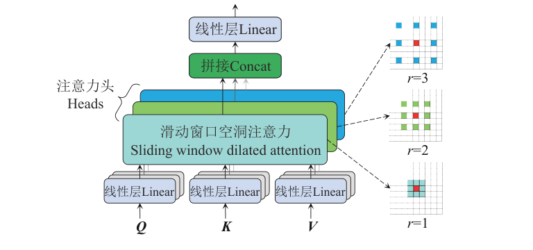
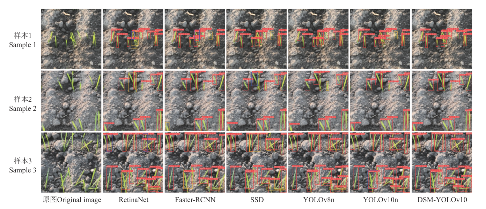
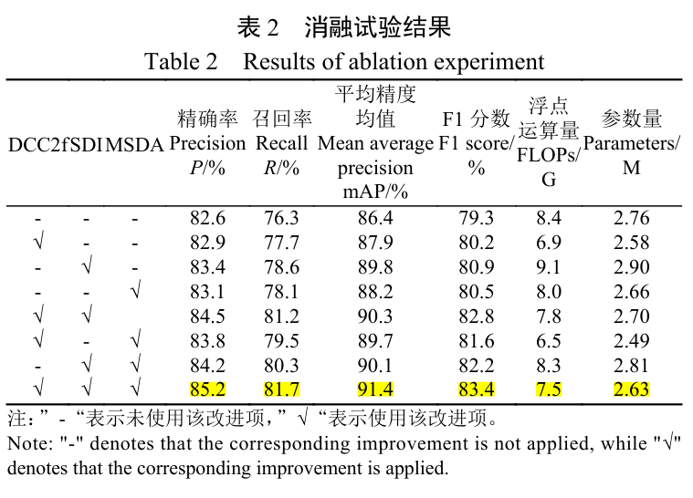
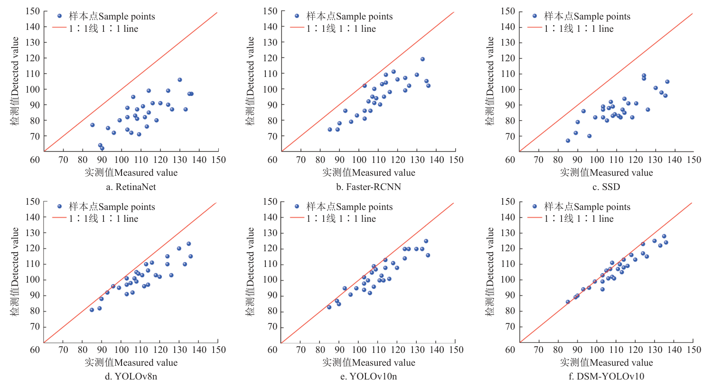

DSM-YOLOv10：DCC2f 减少冗余计算、SDI 语义细节融合、MSDA 多尺度空洞注意力，mAP 达 91.4%，参数量减少 4.7%，推理时间 13.2 ms。
以 DualConv 构建 DCBottleneck 替代 C2f，减少冗余计算并增强梯度流，参数量减少 6.5%、浮点运算量减少 17.9%。
替换 Concat 操作，将高层语义信息显式注入底层细节，通过哈达玛积实现语义指导下的细节增强。
多头并行不同膨胀率的局部注意力，感受野覆盖 3×3 到 7×7，增强多尺度上下文建模能力。
精确率、召回率、mAP 和 F1 分数分别达到 85.2%、81.7%、91.4% 和 83.4%，推理时间降至 13.2 ms。


fi1 = φic(φis(fi0))

hi = SWDA(Qi, Ki, Vi, ri)




DCC2f、SDI、MSDA 分别对应骨干冗余、颈部复用困难与多尺度建模困难，消融试验给出单模块与组合增益。
围绕阴天、密集重叠、生长杂乱三类场景构建效果图组，辅以小目标补充试验与特征响应热力图。
用 R²、RMSE、MAE 验证检测值与实测株数一致性，直接对应出苗调查的农艺需求。